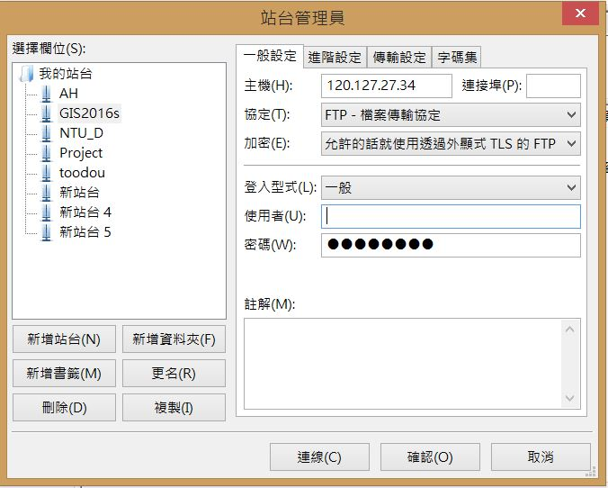

For 2016 Spring GIS Students Only
*Assignment Upload Address
Please download FTP software at first, for example filezilla, cute ftp, ...,etc. If you choose filezilla, and please download the "Download FileZilla Client" Version.
FileZilla Download Link
You may build a new station, and its necessary information is as flilows,

- Server Address: 120.127.27.34
- Port: 21
- Account: gis2016_spring
- Password: gis2016
*Cautions:
- All data should be pakaged as an individual folder (Name:"ID_Name") for each assignment which you have used, and upload to server.
- All mxd files need to save as "relative path" file, or both your data source and scores might be lost at the same time.
- All assignments you upload are consist of two necessary items, one is overview file (Word:: print screen for each question), and the other is mxd dataset(mxd file and all data you have used for this assignment).
- Copy other classmate assignments are forbidden, and this will let your score to Zero.
- If you have any question about the assignment, please do not hesitate to post your problems on the FB group. People who know the solutions of question can reply your suggestions and methods on the FB, and all TAs will check your answer as soon as possible. We hope that you all can discuss your questions through the FB interface and realize the potential problems while you do the assginment.
Thank you for your kind cooperation!
Last updated: 2016/02/24 10:46
By Chan, Chun-Hsiang